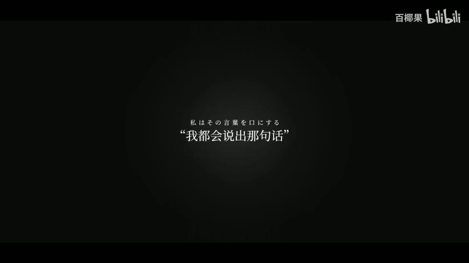
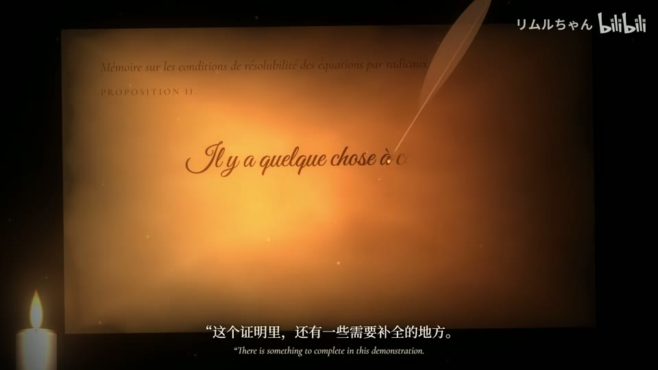
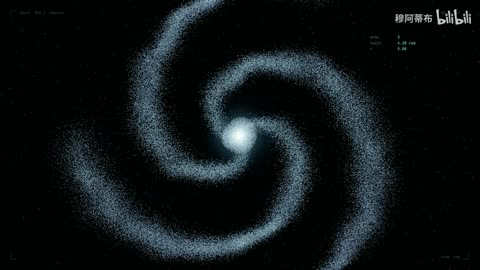

H32 / 18.014—21.951秒
【静止画MAD】言語如蘇打般湧現【黃金祭2024】
多个大小不同的虹彩气泡上浮，背景由蓝紫字卡变成人物，气泡层继续浮动；大的前景泡泡偏模糊，细小泡泡密集。20.149秒白屏后人物显现，不把每个气泡掠过当切镜。
迁移提问：前景、中景、背景分别是什么？如果镜头移动，原图未画出的部分由谁补齐？
手法专题 / 规则、用途与取舍
用运动方向、尺度和密度建立空气、空间或情绪；装饰层应服务焦点。
回忆、季节、梦幻、寒冷、散场、能量爆发、文本聚散。
平均铺满；近远粒子大小与模糊无差别；粒子挡脸；用程序火星冒充纪实拍摄。
①定义粒子是什么；②分前后层与速度；③设置出生/寿命；④给近层较大尺度和模糊；⑤留出脸与文字的净区。
基础粒子易；真实流体、物理碎裂与纪实焰火需素材或模拟。
基础机制已做13项原创演示，不等于本页所有复杂组合均已成片验证。
原机制演示 →H32 / 18.014—21.951秒
多个大小不同的虹彩气泡上浮，背景由蓝紫字卡变成人物，气泡层继续浮动；大的前景泡泡偏模糊，细小泡泡密集。20.149秒白屏后人物显现，不把每个气泡掠过当切镜。
迁移提问：前景、中景、背景分别是什么？如果镜头移动，原图未画出的部分由谁补齐？

H45 / 78—88秒
弧形刻度与小字围绕人物，漂浮泡泡；后为脚手架/河岸逆光人物。
迁移提问：前景、中景、背景分别是什么？如果镜头移动，原图未画出的部分由谁补齐？

H15 / 88—104秒
88秒蓝花与人物形成前后深度，100秒巨大的淡字占背景，104秒白花铺满人物脚下。
迁移提问：前景、中景、背景分别是什么？如果镜头移动，原图未画出的部分由谁补齐？

AI21 / 0—29秒
暖光矩形纸面，左下蜡烛、羽毛笔沿书写区域移动，花体字逐步出现，底部中英双语。
迁移提问：这条曲线或粒子变化解释了什么？观众能描述变化关系，还是只能说“很炫”？

AI50 / 25—27秒
粒子星系在俯视和侧视间改变视角，主要为同镜相机运动。
迁移提问：这条曲线或粒子变化解释了什么？观众能描述变化关系，还是只能说“很炫”？
同一场景用低密度慢雪与高密度横向碎片各做6秒，比较情绪差异。
交付时保留基础版与加效果版，并写“增加了什么意义、损失了什么清晰度”。
使用观察与复盘表 →